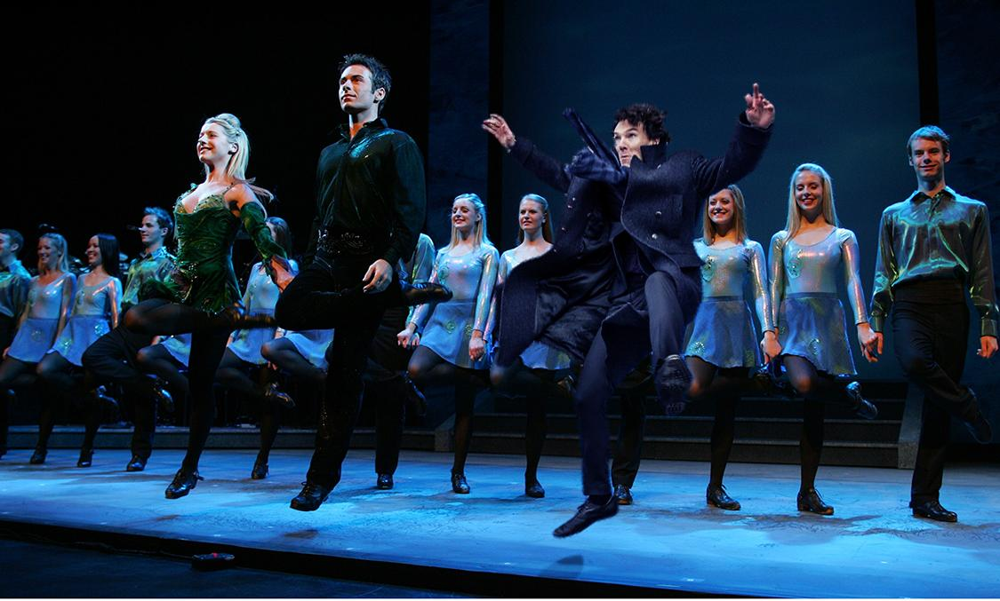

Наряду с U2 и Днем святого Патрика совсем недавно танцы также стали визитной карточкой Ирландии. Невозможно просто стоять во время праздника, слушая музыку – нужно двигаться. Ведь у Ирландцев, друзья, даже танцы особенные.
Первое упоминание об Ирландских танцах датируется XI веком, когда танцевальные гуляния крестьян получили название feis (произносится «феш»), но описания самих танцев впервые появились в середине XVI в. Однако совсем неясно какие из танцев, описанных в то время были Ирландскими, а какие появились в Ирландии под влиянием Шотландских и Французских танцев.
В период английской колонизации Ирландии метрополия непрерывно преследовала все проявления ирландской культуры. «Карательные законы», которые были введены англичанами в середине XVII в. запрещали обучение ирландцев чему-либо, в том числе музыке и танцам. Поэтому на протяжении более чем 150-ти лет ирландским танцам учились тайно. Танцевальная культура существовала в виде тайных занятий, которые проводили в деревнях бродячие учителя, так называемые «мастера танцев» и в виде больших сельских гулянок, на которых люди танцевали в группах, часто под руководством тех же мастеров.
В начале XX века в процессе «гэльского возрождения» специальное подразделение Гэльской лиги занялось исследованием и стандартизацией традиционных ирландских танцев с целью их дальнейшей популяризации среди ирландского населения
В XX и XXI веках ирландский танец и ирландская музыка стали "визитной карточкой" Ирландии. 1990-е и 2000-е одно за другим с оглушительным успехом ставятся яркие танцевальные шоу: "Riverdance", "Lords of the dance", "Feet of flames" и другие. Эти шоу породили новый стиль ирландского танца - так называемый Show-stile - современную фантазию, основанную на традиционной технике ирландского танца.

В настоящее время насчитывается около сорока стилей ирландских танцев, некоторые из них являются симбиозом ирландской танцевальной культуры и танцев других народов мира, а некоторые своим происхождением обязаны сугубо Ирландии и ирландскому народу. Все виды ирландских танцев исполняются исключительно под традиционные ирландские танцевальные мелодии: рилы, джиги и хорнпайпы.
Но если вы уже готовы пуститься в пляс, вам нужно знать, что ирландские танцы делятся на:
· танцы «для кабака» они же сеты-кадрили, чтобы поплясать самим и получить удовольствие от процесса;
· танцы «для соревнования» кейли и сольные танцы современного стиля, чтобы станцевать перед другими танцорами и получить оценку судей;
· танцы «для сцены» вроде авторских шоу: Riverdance и Lord of the Dance.
Если за рубежом Ирландские танцы исполняются только под ирландскую народную музыку, то на родине местные готовы танцевать под все что угодно. Но только Ирландское. Особо вкусно степ ложится на композицию группы U2 – Desire, первый сингл из альбома Rattle and Hum. Композиция добралась до третьего места в хит-параде Billboard Hot 100, и возглавила чарты Modern и Mainstream Rock Tracks одновременно. Это первая песня U2, добившаяся подобного успеха. В 1989 году «Desire» стала лауреатом премии «Грэмми» в номинации «Лучшее вокальное рок-исполнение дуэтом или группой».
Легендарный ирландский виски Талламор Дью и ПростоРадио предлагает тебе получить собственный Грэмми. Для этого тебе нужно записать кавер на песню любой ирландской группы или исполнителя, снять это на видео, опубликовать это видео в ютьюб, вставить ссылку на сайт irishtrue.vgorode.ua и возможно именно ты отправишься в Дублин на самый яркий RockStar Уикенд в своей жизни.